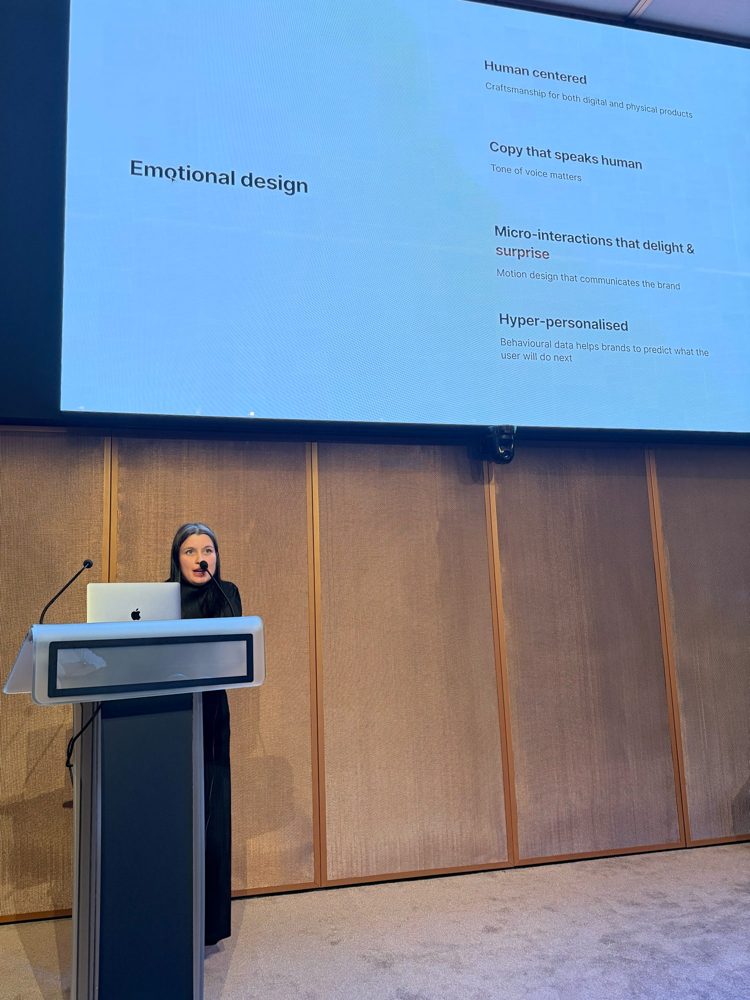

The Future of E-Commerce does not look like E-Commerce
Shopping behaviour is changing fast, and so is technology. Yet most websites still look like digital catalogs with product descriptions. That’s about to change.
Recently I shared my research on the future of luxury e-commerce in Milan at Huawei’s Experience Innovation Summit and with the LVMH Experience Design Community in Paris. I wanted to share this more widely in order to share a glimpse of the future of shopping I see emerging.
Takeaways from the presentation:
✿ Today people buy luxury to express their personal identity, rather than to show off their status in society. Goodbye logo t-shirts as a strategy.
✿ Consumers’ love for craftsmanship is growing: they now expect it both from products and digital experiences (storytelling, micro-interactions, motion).
✿ Let tech and design disappear: seamless, calm experiences with emotional intelligence (copy that speaks human, playful interactions, hyper-personalized flows) will be the norm.
